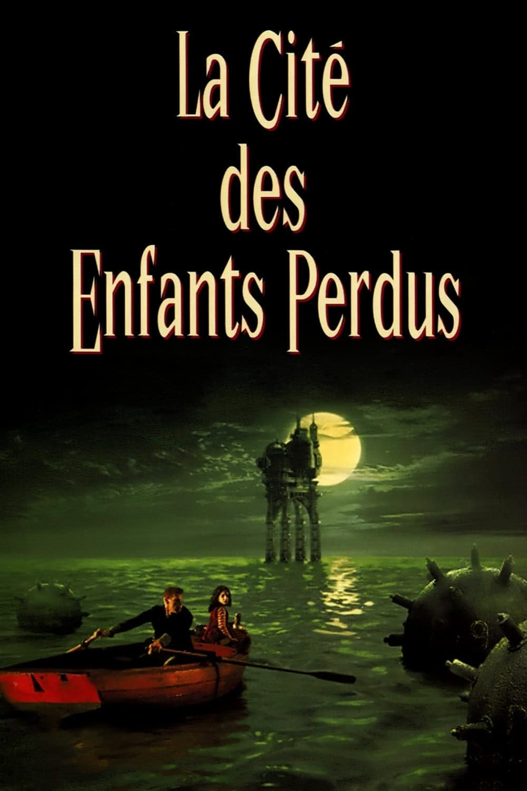

Nuit du sommeil
La Cité des Enfants Perdus
Krank, un étrange personnage vit entouré de clones et d'autres personnages encore plus étranges sur une plate-forme en mer perdue dans le brouillard. Krank, doit, pour ne pas vieillir trop vite, voler les rêves des enfants. C'est pour cela qu'il les enlève de la cite portuaire.
durée: 112 min

RRR